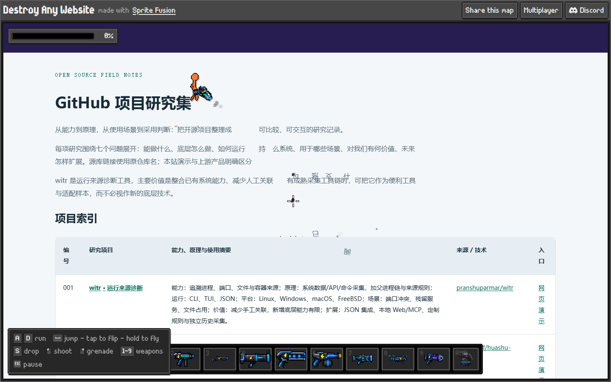
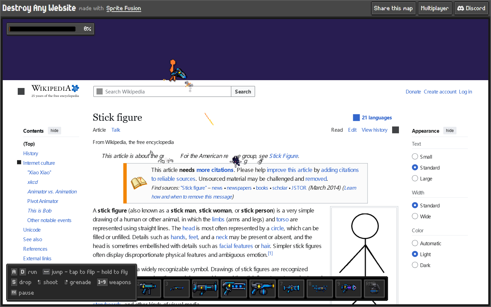

碎裂与飘散
玻璃用错位网格三角形，纸片用细长条带。两者都由 Matter.js 求解运动；纸片额外加入轻风、升力和摆动。
LOCAL ENGINE / INTERACTIVE LAB
这里专注交互实验。原作能力、扩展关系与产品路线见研究总览。
把页面裂成不规则三角形，碎片带着原内容旋转、弹跳。
适合产品揭晓、科技展示、冲击反馈点按或拖拽页面产生裂解 · 选择点触、扩散或冲击
重力与强度即时生效，片区尺寸在下一次开始时生效。
已核对原作的 ?url= 接入方式。会打开原作，由它的服务端加载目标页面。
原作支持更多武器、飞行与在线多人；这些功能未在本地版本冒充实现。第三方页面加载结果由原作服务决定。
2026-10-02，两个网址均已由原作加载为游戏关卡。研究集截图可见射击产生的字符碎片；尚未测试多人或完整关卡破坏。截图来源：Destroy Any Website / Hugo Duprez · Sprite Fusion。


02 / HOW IT WORKS
新增模式共用真实 DOM、任务和事件接口，按表现选择刚体、粒子轨迹或遮罩。
玻璃用错位网格三角形，纸片用细长条带。两者都由 Matter.js 求解运动；纸片额外加入轻风、升力和摆动。
采样原页面纹理颜色，生成细小粒子。像素向上衰减，霓虹沿曲线汇入能量环。使用粒子动画，不冒充刚体碰撞。
累计圆形擦除遮罩，绘制扩散涟漪。每个片区采样 25 个点估计揭晓面积，重复擦除不会重复计算。
静态路径请求 /api/page，脚本路径使用 /p/… 代理。
受限 iframe 中读取元素几何、计算样式、文字与绘制信息。
把采集结果转换为关卡，再加入角色、武器与破坏逻辑。
WebSocket 连接房间；客户端上传或下载关卡数据。
未取得原作服务端源码或开源许可；无法核实代理内部处理、服务器权威性与完整同步算法。
html2canvas 根据 DOM 与支持的样式重建图像；并非浏览器原生截图。
只选 data-destructible 区域。纹理按网格切片，碎片初始保持静止。
射线检测寻找首个命中；受击片解除固定，进入真实刚体碰撞与重力模拟。
累计被破坏的原始面积。达到阈值后揭晓结果，用户可复制活动码或进入项目。
本地：真实 DOM 切片、角色移动与跳跃、三种攻击、触控、自动演示、参数调节、任务反馈、复原与事件记录。
原作：网址导入、多武器、飞行与房间联机。可从上方入口体验。
浏览器同源规则限制跨域 DOM 读取。html2canvas 也不能直接读取未授权的跨域图片。这里的 DOM 实验只处理自有场景；跨站扩展另走当前视口截图路径。
浏览器扩展可在用户授权后处理当前网页；按网址离线采集整页仍需独立后端和页面适配。
体验开始、首次命中、任务完成与后续动作，是这类互动的基本漏斗。本地日志可以真实记录这些动作并下载。
这次没有线上流量、付费或留存数据；娱乐性与业务收益需要分别验证。
03 / EXTENSIBILITY
本项目已经通过场景配置和事件接口复用同一引擎。
const lab = new DestructionEngine({
canvas, source: document.querySelector('.content'),
cellSize: 48,
onEvent: (event) => analytics.track(event)
});
await lab.prepare();
lab.start();
// 在可破坏区域添加 data-destructible
// 用 onEvent 的 complete 事件接入业务动作换内容、设定完成阈值、调节切片尺寸、重力与冲量，复用全部运动与交互逻辑。
增加受控采集后端、布局兼容测试；多人场景还需服务器维护房间、校验输入和同步破坏状态。
服务端校验领取资格、发放可核销券，并记录去重后的访问漏斗。本地示例码不具有商业效力。
仅保存在当前页面内存中；下载后可用于复盘流程与扩展接口。